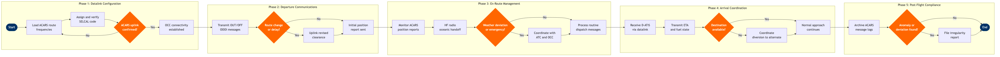

Air-to-Ground Communications Management
Flight Operations › Flight Dispatch & Control · 20 L4 steps · 5 phases · 4 decision gates · Updated 2026-10-01 20:51
📊
Process Flow Diagram (BPMN)

📋
L4 Process Steps
| Step | Step Name | Role / Swim Lane | System | Input | Output | KPI | Dec? | Exc? |
|---|---|---|---|---|---|---|---|---|
Phase 1 1.1 |
Load ACARS datalink frequencies for planned route | Flight Dispatcher | SITA ACARS | Filed flight plan with route and frequency plan | ACARS datalink profile loaded for flight | Datalink configuration complete ≥15 min before departure | N | N |
| 1.2 | Assign and verify SELCAL code for aircraft | Flight Dispatcher | SITA ACARS | Aircraft tail number, route segment with HF requirement | Confirmed SELCAL code entered in flight plan and crew briefing | SELCAL assignment accuracy 100%; no duplicate codes per sector | N | N |
| 1.3 | Test ACARS uplink connectivity with Operations Control | Flight Dispatcher | SITA ACARS | Aircraft powered-on ACARS avionics, OCC datalink server status | Two-way ACARS test message acknowledged; link quality confirmed | Uplink test round-trip <90 seconds; link quality ≥95% message delivery | Y | Y |
| 1.4 | Activate voice backup if ACARS uplink fails | Flight Dispatcher | Telex / SITA ACARS | Failed ACARS uplink test result | VHF Company frequency and phone patch number issued to crew; failure logged | Voice backup activation within 5 min of confirmed datalink failure | N | Y |
Phase 2 2.1 |
Transmit OUT and OFF OOOI messages via ACARS | Flight Crew | SITA ACARS | Aircraft door close and wheels-off events from FMS | OUT/OFF timestamps transmitted to OCC and airline operations system | OOOI transmission latency <30 seconds of triggering event; 99.5% capture rate | N | Y |
| 2.2 | Send initial position report and fuel state to dispatch | Flight Crew | Jeppesen FliteDeck | Departure fuel uplift, FMS waypoint sequence, ATC initial clearance | Position report with fuel on board (FOB) and cleared altitude uplinked to OCC | Initial report transmitted within 10 min of wheels-off | N | N |
| 2.3 | Evaluate departure delay or route amendment requirement | Flight Dispatcher | NAVBLUE | ATC slot allocation, departure ATIS, updated SIGMET/AIRMET data | Decision: standard departure confirmed or amended clearance required | Route amendment decision issued ≥5 min before off-block when ATC delay >15 min | Y | Y |
| 2.4 | Uplink revised route clearance or holding instructions | Flight Dispatcher | SITA ACARS | ATC revised clearance or GDP holding instruction | Amended route or holding fix uplinked and crew-acknowledged via ACARS CPDLC | Crew acknowledgement received within 3 min of uplink; amendment compliance 100% | N | Y |
Phase 3 3.1 |
Monitor automated ACARS position reports en-route | Flight Dispatcher | SITA ACARS | FMS periodic position reports (10–30 min intervals per route type) | Real-time flight track displayed in OCC; anomalies flagged for dispatcher review | Position report receipt interval ≤30 min; missed report alert within 5 min of overdue | N | Y |
| 3.2 | Process and acknowledge dispatch uplink messages | Flight Crew | Jeppesen FliteDeck | Weather updates, NOTAM amendments, fuel revised calculations from dispatch | Crew acknowledgement sent; updated parameters loaded in FMS as required | Uplink acknowledgement within 5 min for operational messages; 100% receipt confirmation | N | Y |
| 3.3 | Execute HF radio handoff for oceanic or remote operations | Flight Crew | Honeywell GoDirect | Oceanic entry waypoint, assigned HF frequencies from route briefing | HF contact established with Oceanic ATC or ARINC/SITA HF network | HF contact established within 10 min of oceanic FIR entry; first-call success rate ≥90% | N | Y |
| 3.4 | Assess weather deviation or emergency communication need | Flight Dispatcher | Honeywell GoDirect | PIREPs, SIGMET updates, crew request for deviation or emergency declaration | Decision: routine ops continue OR deviation/emergency coordination initiated | Dispatcher response to crew deviation request <2 min; emergency acknowledgement <1 min | Y | Y |
| 3.5 | Coordinate weather deviation or emergency with ATC and OCC | Flight Dispatcher | SITA ACARS | Crew deviation request, SIGMET polygon, alternate routing from NAVBLUE | ATC deviation clearance relayed to crew; OCC fuel and alternate analysis completed | Deviation clearance loop closed (crew request → ATC clearance → crew confirmation) <15 min | N | Y |
Phase 4 4.1 |
Receive and acknowledge D-ATIS update via datalink | Flight Crew | SITA ACARS | Destination airport D-ATIS broadcast (IATA code, ATIS identifier letter) | Current ATIS letter confirmed in crew acknowledgement; approach brief updated | D-ATIS received ≥30 min before destination ETA; ATIS currency check at top of descent | N | N |
| 4.2 | Transmit final ETA and fuel state to dispatch and OCC | Flight Crew | Jeppesen FliteDeck | FMS top-of-descent calculations, current FOB, ATC ETA slot | ETA and FOB report uplinked; OCC arrival planning triggered | ETA accuracy ±3 min versus actual on-blocks; fuel state report within 1 min of TOD | N | N |
| 4.3 | Confirm destination availability with dispatch | Flight Dispatcher | NAVBLUE | Destination NOTAMs, RVR, field condition report, ATC ATIS status | Decision: destination available for landing OR diversion to alternate required | Go/no-go decision for destination communicated to crew ≥20 min before ETA | Y | Y |
| 4.4 | Coordinate diversion to alternate airport if required | Flight Dispatcher | NAVBLUE | Diversion trigger (weather, NOTAM, fuel state), alternate airport list from flight plan | Alternate airport confirmed; revised routing, fuel check, and crew notification completed | Alternate airport decision and crew uplink <5 min of diversion trigger; fuel sufficient for alternate + 30 min holding confirmed | N | Y |
Phase 5 5.1 |
Download and archive ACARS message logs post-flight | Flight Operations Analyst | AWS S3 / Redshift | Full ACARS message thread for completed flight (uplinks and downlinks) | Archived communications log stored in data lake; indexed by flight ID and date | 100% of ACARS logs archived within 2 hours of on-blocks; retention period ≥24 months per ICAO Annex 6 | N | N |
| 5.2 | Review post-flight communications for anomalies or gaps | Flight Operations Analyst | AWS S3 / Redshift | Archived ACARS log, OOOI timestamps, dispatcher notes from flight | Anomaly report or clean-flight confirmation; flagged items routed for investigation | Post-flight communications review completed within 24 hours of arrival; anomaly detection rate ≥95% vs manual audit | N | N |
| 5.3 | File ATC communications deviation or irregularity report | Flight Dispatcher | AWS S3 / Redshift | Anomaly flag from post-flight review, dispatcher event notes | Mandatory irregularity report filed; safety management system (SMS) notification sent | Deviation report filed within 48 hours of event per FAR Part 121.711; 100% compliance with ASAP/ASRS voluntary reporting where applicable | N | Y |
📋